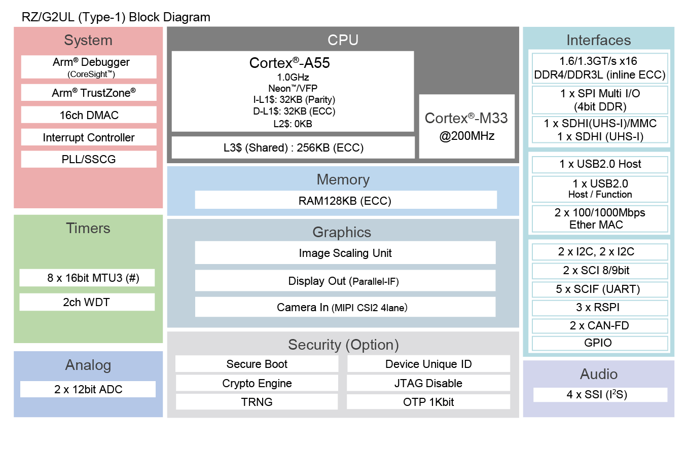

RZ/G2UL SMARC Evaluation Board Kit
Overview
The Renesas RZ/G2UL SMARC Evaluation Board Kit (RZ/G2UL-EVKIT) consists of a SMARC v2.1 module board and a carrier board.
Device: RZ/G2UL (Type-1) R9A07G043U11GBG
Cortex-A55 Single, Cortex-M33
BGA361pin, 13mmSq body, 0.5mm pitch
SMARC v2.1 Module Board Functions
DDR4 SDRAM: 1GB x 1pc
QSPI flash memory: 128Mb x 1pc AT25QL128A
eMMC memory: 64GB x 1pc
The microSD card slot is implemented and used as an eSD for boot
5-output clock oscillator 5P35023 implemented
PMIC power supply DA9062 implemented
Carrier Board Functions
The FFC/FPC connector is mounted as standard for connection to high-speed serial interface for camera module.
The Micro-HDMI connector via DSI/HDMI conversion module is mounted as standard for connection to high-speed serial interface for digital video module.
The Micro-AB receptacle (ch0: USB2.0 OTG) and A receptacle (ch1: USB2.0 Host) are respectively mounted as standard for connection to USB interface.
The RJ45 connector is mounted as standard for software development and evaluation using Ethernet.
The audio codec is mounted as standard for advance development of audio system. The audio jack is implemented for connection to audio interface.
The Micro-AB receptacles are implemented for connection to asynchronous serial port interface.
The microSD card slot and two sockets for PMOD are implemented as an interface for peripheral functions.
For power supply, a mounted USB Type-C receptacle supports the USB PD standard.
Hardware
The Renesas RZ/G2UL MPU documentation can be found at RZ/G2UL Group Website [1]
{kind=link}

RZ/G2UL block diagram (Credit: Renesas Electronics Corporation)
Supported Features
The rzg2ul_smarc board supports the hardware features listed below.
- on-chip / on-board
- Feature integrated in the SoC / present on the board.
- 2 / 2
-
Number of instances that are enabled / disabled.
Click on the label to see the first instance of this feature in the board/SoC DTS files. -
vnd,foo -
Compatible string for the Devicetree binding matching the feature.
Click on the link to view the binding documentation.
rzg2ul_smarc/r9a07g043u11gbg/cm33 target
Type |
Location |
Description |
Compatible |
|---|---|---|---|
CPU |
on-chip |
ARM Cortex-M33 CPU1 |
|
ADC |
on-chip |
Renesas RZ ADC-C driver1 |
|
Counter |
on-chip |
Renesas RZ GTM Counter3 |
|
GPIO & Headers |
on-chip |
Renesas RZ GPIO common1 |
|
on-chip |
Renesas RZ GPIO controller19 |
||
I2C |
on-chip |
||
Interrupt controller |
on-chip |
ARMv8-M NVIC (Nested Vectored Interrupt Controller)1 |
|
on-chip |
Renesas RZ Interrupt Controller1 |
||
on-chip |
Renesas RZ GPIO interrupt (TINT) controller32 |
||
MMU / MPU |
on-chip |
ARMv8-M MPU (Memory Protection Unit)1 |
|
Pin control |
on-chip |
Renesas RZ/G pin controller1 |
|
Serial controller |
on-chip |
Renesas RZ SCIF UART controller5 |
|
SRAM |
on-board |
Generic on-chip SRAM1 |
|
Timer |
on-chip |
ARMv8-M System Tick1 |
|
on-chip |
Renesas RZ GTM Timer3 |
Programming and Debugging
Applications for the rzg2ul_smarc board can be built in the usual way as
documented in Building an Application.
Console
By default, J-Link RTT Viewer [4] is used by Zephyr running on CM33 for providing serial console. The only serial port (SER3_UART micro-USB) is reserved for CA55 to run Linux.
Note
Set SW1-1 on the board to “OFF” to select JTAG debug mode, which is required for RTT to work.
There are two ways to use the RTT Viewer on this board. The basic steps for each method are described below:
1. Using with Ozone
After the Zephyr application has been built successfully, open J-Link RTT Viewer and configure the connection as follows:
Connect to J-Link: Existing Session (enable Auto Reconnect)
RTT Control Block: Auto Detection
Click OK
Next, open Ozone Debugger [5] and choose “Create New Project”. Inside the “New Project Wizard” configure the settings as follows:
Device: R9A07G043U11
Register Set: Cortex-M33
Click Next
Target Interface: SWD
Target Interface Speed: 4MHz
Host Interface: USB
Click Next
Set the full path of
zephyr.elffile. The path should resemblezephyrproject/zephyr/build/zephyr/zephyr.elfClick Next, leave all options by default, and click Finish
Press F5 to download and reset program
2. Using with U-Boot
After the Zephyr application has been built successfully, open the zephyr.map file located in
zephyrproject\zephyr\build\zephyr\zephyr.map. Locate the symbol _SEGGER_RTT and copy its
address value in hexadecimal.
Then, perform the “Flashing” steps described below to run the Zephyr application using U-Boot. As soon as the application is invoked, open J-Link RTT Viewer and configure the connection as follows:
Connect to J-Link: USB
Specify Target Device: R9A07G043U11 (enable Force go on connect)
Target Interface & Speed: SWD @ 4000 kHz
RTT Control Block: Select “Address”, then paste the address of the
_SEGGER_RTTsymbol copied earlier.Click OK
Note
When using RTT Viewer with a Zephyr application launched by U-Boot, it is important to connect the RTT Viewer immediately after executing the U-Boot command sequence. This helps avoid losing early log output.
Debugging
It is possible to load and execute a Zephyr application binary on
this board on the Cortex-M33 System Core from
the internal SRAM, using JLink debugger (J-Link Debug Host Tools).
Here is an example for building and debugging with the Hello World application.
# From the root of the zephyr repository
west build -b rzg2ul_smarc/r9a07g043u11gbg/cm33 samples/hello_world
west debug
Flashing
RZ/G2UL-EVKIT is designed to start different systems on different cores. It uses Yocto as the build system to build Linux system and boot loaders to run Zephyr on Cortex-M33 with u-boot. The minimal steps are described below.
Follow “2.2 Building Images” of SMARC EVK of RZ/G2L, RZ/G2LC, RZ/G2UL Linux Start-up Guide [2] to prepare the build environment.
At step (4), follow step “2. Download Multi-OS Package” and “3. Add the layer for Multi-OS Package” of “3.2 OpenAMP related stuff Integration for RZ/G2L, RZ/G2LC and RZ/G2UL” of Release Note for RZ/G Multi-OS Package V2.2.0 [3] to add the layer for Multi-OS Package.
$ cd ~/rzg_vlp_<pkg ver> $ unzip <Multi-OS Dir>/r01an5869ej0220-rzg-multi-os-pkg.zip $ tar zxvf r01an5869ej0220-rzg-multi-os-pkg/meta-rz-features_multi-os_v2.2.0.tar.gz $ bitbake-layers add-layer ../meta-rz-features/meta-rz-multi-os/meta-rzg2l
Start the build:
$ MACHINE=smarc-rzg2ul bitbake core-image-minimal
The below necessary artifacts will be located in the build/tmp/deploy/images
Artifacts
File name
Boot loader
bl2_bp-smarc-rzg2ul.srec
fip-smarc-rzg2ul.srec
Flash Writer
Flash_Writer_SCIF_RZG2UL_SMARC_DDR4_1GB_1PCS.mot
Follow “4.2 Startup Procedure” of SMARC EVK of RZ/G2L, RZ/G2LC, RZ/G2UL Linux Start-up Guide [2] for power supply and board setting at SCIF download (SW11[1:4] = OFF, ON, OFF, ON) and (SW1[1:3] = ON, OFF, OFF)
Follow “4.3 Download Flash Writer to RAM” of SMARC EVK of RZ/G2L, RZ/G2LC, RZ/G2UL Linux Start-up Guide [2] to download Flash Writer to RAM
Follow “4.4 Write the Bootloader” of SMARC EVK of RZ/G2L, RZ/G2LC, RZ/G2UL Linux Start-up Guide [2] to write the boot loader to the target board by using Flash Writer.
Follow “4.5 Change Back to Normal Boot Mode” with switch setting (SW11[1:4] = OFF, OFF, OFF, ON) and (SW1[1:2] = ON, OFF)
Follow “3. Preparing the SD Card” of SMARC EVK of RZ/G2L, RZ/G2LC, RZ/G2UL Linux Start-up Guide [2] to write files to the microSD Card
Copy zephyr.bin file to microSD card
Follow “4.4.2 CM33 Sample Program Invocation with u-boot” from the beginning to step 4 of Release Note for RZ/G Multi-OS Package V2.2.0 [3]
Execute the commands stated below on the console to start zephyr application with CM33 core. Here, “N” stands for the partition number in which you stored zephyr.bin file.
Hit any key to stop autoboot: 2 => dcache off => mmc dev 1 => fatload mmc 1:N 0x00010000 zephyr.bin => fatload mmc 1:N 0x40010000 zephyr.bin => cm33 start_normal 0x00010000 0x40010000 => dcache on
Troubleshooting
By default, the only valid serial port (SER3_UART micro-USB port) controlled by SCIF0 is used by Linux to print Linux console output. Therefore, in order to use it from Zephyr, the Linux console must first be disabled. To do this, run the following command in the Linux console to unbind the SCIF0 driver:
$ echo 1004b800.serial | tee /sys/bus/platform/drivers/sh-sci/unbind
This allows the SCIF0 to be accessed from the Zephyr side in debug mode for providing serial console. Please note that the SCIF0 driver is disabled by default on the Zephyr side to prevent conflicts.